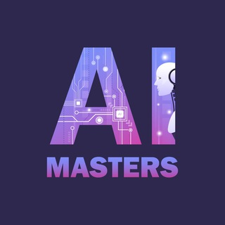

네이버, 서울 거리뷰 44만 장으로 학습한 ‘Seoul World Model’ 공개

세 줄로 읽기
서울의 좌표와 이동 경로를 지정하고 “비 오는 밤”이라고 입력하면, 실제 거리를 배경으로 주행 영상을 생성하는 서울 한정 월드 모델 'Seoul World Model' 이 공개 되었습니다.
모델은 경로 주변의 네이버지도 거리뷰를 찾아 건물과 도로 배치를 참고하고, 사용자가 지정한 날씨와 상황을 반영해 수 km에 걸친 영상을 만듭니다.
서울이 아니여도 공개된 코드로 나가서 사진만 몇장 찍으면 위와 같은 영상을 만들수 있게 재밌는 툴을 공개 했습니다.
원문 문장에서 고른 요약입니다. 숫자와 사실은 원문에서 다시 확인하세요.
핵심 포인트
- 1네이버, 서울 거리뷰 44만 장으로 학습한 ‘Seoul World Model’ 공개
- 2코드는 Apache 2.0 라이센스지만, 공개된 가중치와 거리뷰 샘플은 비상업적 용도로 사용할 수 있습니다.
- 3(본인이 다시 트레이닝 하면 상업적으로 사용 가능합니다)
이 블로거의 최근 글
- 코리아 핀테크 위크 2026에서 카카오페이 ai에이전트 서비스 데모 참여했는데...
- AI로 P = NP 가 풀렸다? 1. 최근 들어 수학의 난제가 계속 풀었다고 주장이 나오는데, 이번 P=NP에 대해서 한번 문제 자체가 뭔지, 풀리면 우리에…
- [中샤오펑, 전기차값 휴머노이드 로봇 내년 출시…수만 대 판매 목표]
- [ 이게 진짜 자동화가 아닐까]
- [ 일주일 동안 $6,528 토큰으로 만든 게임 ]
같은 분류의 다른 글
- Moonshot AI가 과학 연구를 위한 Kimi API 지원 프로그램을 시작했습니다.
- 글로벌 기업이 제공하는 무료 온라인 교육 플랫폼 11곳
- 미국 연방통신위원회가 스페이스X의 우주 AI 데이터센터 프로젝트 스타마인드에 최대 100만 기의 위성 배치를 조건부 승인했습니다.
- Google AI 구독자는 매월 Google Cloud 크레딧을 받을 수 있습니다.
- Google 유료 AI 구독 상품에 숨겨진 강력한 혜택들이 공개됐습니다
공개 페이지에는 짧은 소개와 원문 링크만 있습니다. 원문 전문은 올리지 않습니다.